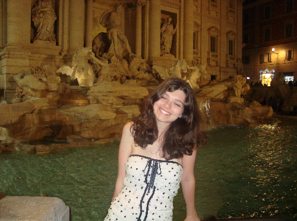

About

Hi! I'm Garrison Brister. I am a passionate graphic designer and multimedia artist obtaining my BFA in Graphic Design at the University of Arkansas, with minors in Marketing and Art History. I currently serve as the Director of Marketing for KXUA Fayetteville, the Director of Ambassador Engagement for the UARK School of Art, and the graphic design editor for Hill Magazine. I have professional experience in art direction for advertising through an internship at Stone Ward in Little Rock.
Copyright © 2026 Garrison Brister